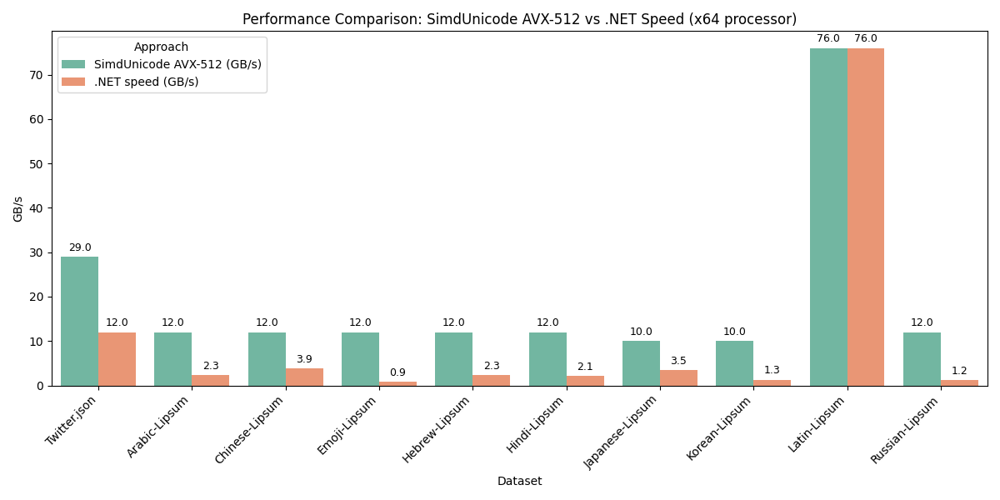

About
For the past year and a half, I've worked alongside Daniel Lemire on three projects:
- Adding Latin1 support to simdutf(up to 38 times faster than the ICU library)
- SimdUnicode: Porting simdutf's UTF8 validation routines to C# (up to 2.3x times faster than the equivalent .NET 9 SIMD-accelerated counterpart, currently under consideration for adoption into .NET. Further ported to mojo by Chris Lattner's team ) 
- SimdBase64: Porting simdutf's Base64 validation routines to C# (up to 10 times faster than its .NET runtime SIMD-accelerated counterpart, currently slated for adoption into .NET 10)
This website has a few goals:
- To document how I was able to contribute to the above projects.
- To serve as a tutorial, of sort. I prefer shorter articles with an overarching narrative: they tend to stick a lot easier. It ended up being a series of vignettes and lessons learned rather than a tutorial but this is how I did it.
- To serve as a portfolio for job search purposes.This site will serve as a summary of major milestones but also as repository of expository essays.
- To serve as a set of notes I can refer back to as needed
Please note this is a draft and a work in progress: all mistakes are my own.